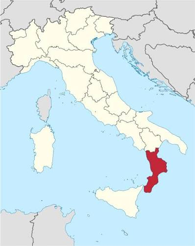
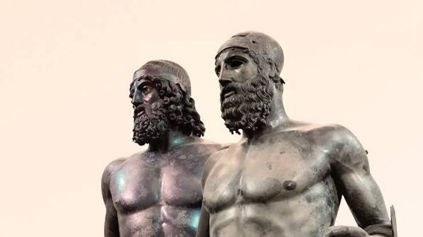
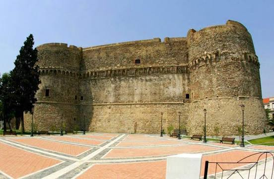
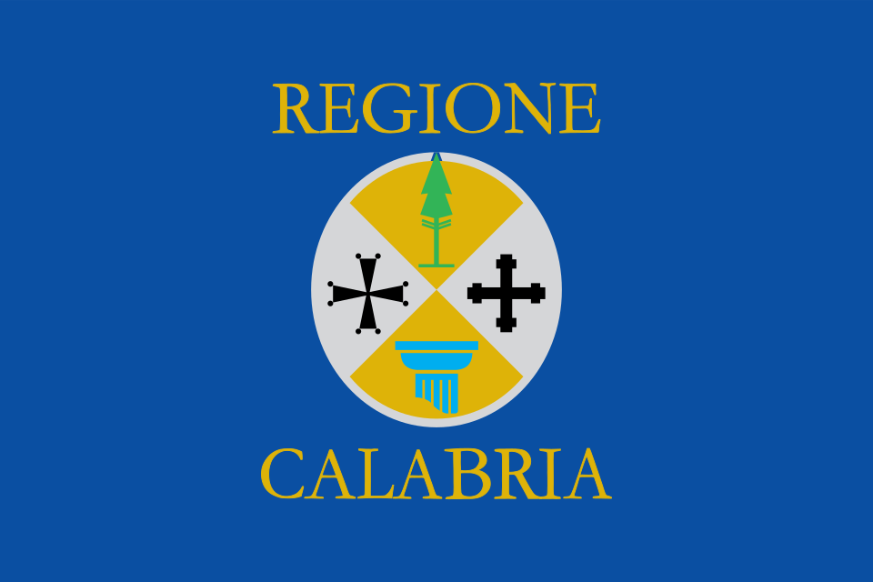
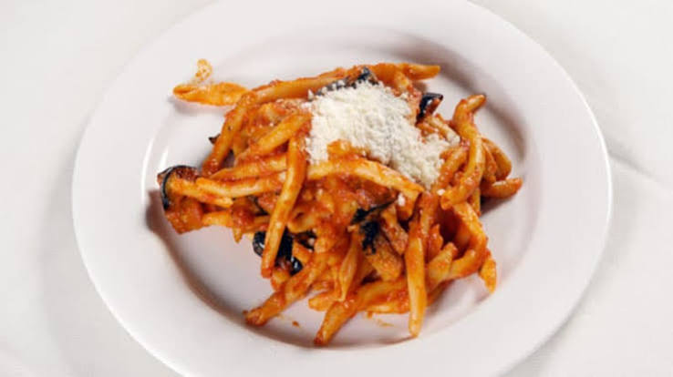
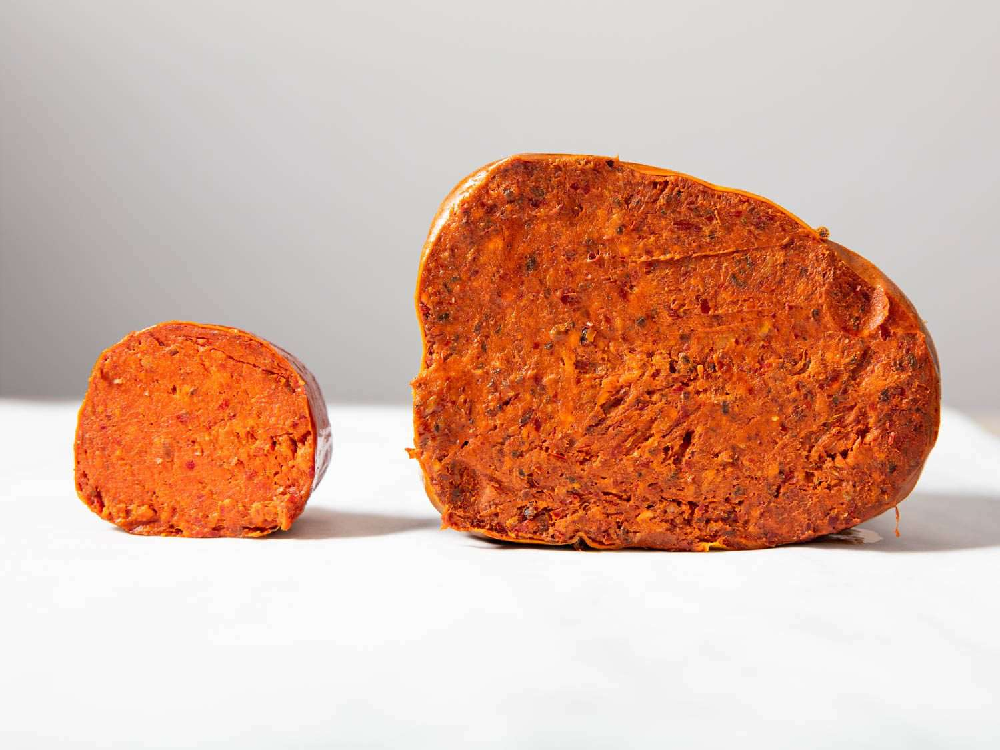
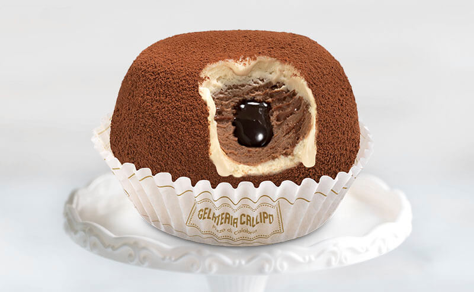
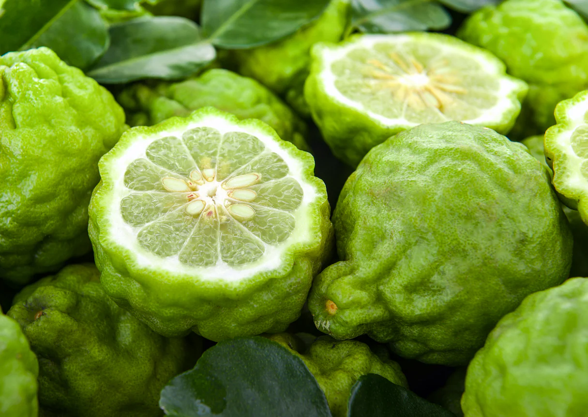

Southern Italy forming the "toe" of the peninsula
Catanzaro
Mountains, forests, and long coastlines
Italian, Calabrian dialects, and Greek minority language
'Nduja, bergamot, and pasta dishes
Beaches, Greek heritage, and dramatic landscapes

Calabria is located at the southern tip of the Italian peninsula, forming the “toe” of Italy’s famous boot-shaped map. It is bordered by Basilicata to the north, the Tyrrhenian Sea to the west, and the Ionian Sea to the east and south. Separated from Sicily by the narrow Strait of Messina, Calabria is known for its rugged mountains, scenic coastlines, and beautiful beaches, making it one of Italy’s most geographically diverse regions.
The region is divided into 5 provinces: Catanzaro, Cosenza, Crotone, Reggio di Calabria, and Vibo Valentia.
Capital: Catanzaro ; Largest city: Reggio Calabria
Calabria experiences a diverse climate shaped by its mountains and surrounding seas. The coastal areas enjoy a typical Mediterranean climate, with hot, dry summers and mild winters, while the mountainous regions have cooler temperatures and more variable weather. Rainfall is much higher in the mountains, where precipitation can exceed 1,500 mm (59 inches) per year, creating lush forests and rich ecosystems. In cities located near the foothills, rainfall averages around 1,000 mm (40 inches) annually, while the eastern coast and southern coastal areas receive much less rain, contributing to Calabria’s warmer and drier landscapes.
Calabria’s landscape is defined by its rugged mountains, rolling hills, and dramatic coastlines. Much of the region is mountainous (42%) or hilly (49%), while flat plains make up only a small portion of the territory and are mainly found along narrow coastal areas. Stretching for around 250 km, Calabria’s interior is shaped by three major mountain ranges: the Pollino Massif, Sila Plateau, and Aspromonte Massif. These diverse landscapes create a region known for its forests, national parks, and breathtaking views overlooking both the Tyrrhenian and Ionian Seas.
Calabria has a history shaped by ancient civilizations, migrations, and cultural exchanges. Its strategic position in the Mediterranean made it a crossroads between Europe and the Eastern Mediterranean for thousands of years.
The earliest inhabitants of Calabria included various Italic peoples, such as the Oenotrians and Ausonians, who developed settlements throughout the region. Beginning in the 8th century BCE, Greek settlers arrived and established colonies along the coast, transforming Calabria into one of the most important centers of Magna Graecia. Cities such as Croton, Sybaris, and Locri became major centers of trade, philosophy, and culture, attracting influential figures like Pythagoras.
After centuries of Greek influence, Calabria was gradually incorporated into the Roman Republic, becoming an important agricultural and strategic region. Following the fall of the Western Roman Empire, the area experienced control from various powers, including the Byzantines, Lombards, and Normans. The Norman conquest in the 11th century brought Calabria into the Kingdom of Sicily, beginning a new era of political and cultural transformation.
Over the following centuries, Calabria became part of the Kingdom of Naples and later the Kingdom of the Two Sicilies, experiencing influences from Spanish and Bourbon rulers. During the Risorgimento, Calabria joined the newly unified Kingdom of Italy in 1861, becoming part of the modern Italian state while preserving its unique Greek, Roman, and Mediterranean heritage.
As of 2026, the total population is over 1.8 million people.
In addition, the region has a land area of 15,219 km² and 120.1/km².
Located at the tip of the Italian peninsula, Reggio di Calabria is one of Calabria’s oldest cities and a major cultural center overlooking the Strait of Messina. The city is famous for the Riace Bronzes, two ancient Greek statues considered among the greatest discoveries of classical art. Reggio also features a scenic waterfront, historic architecture, and strong connections to Calabria’s Magna Graecia heritage.
Population: 167,925 people
Known as the "City of the Two Seas," Catanzaro is located on a narrow stretch of land between the Ionian and Tyrrhenian Seas. Built on hills overlooking the coast, the city has a long history as a strategic and administrative center. Catanzaro is also known for its traditional silk production, historic bridges, and views of the surrounding mountains and coastline.
Population: 82,708 people
Located along the Ionian coast, Corigliano-Rossano was created through the merger of the historic towns of Corigliano Calabro and Rossano. The city is known for its rich Byzantine heritage, including the Codex Purpureus Rossanensis, one of the oldest surviving illuminated manuscripts in the world. It is also famous for agriculture, particularly citrus production and the renowned Amarelli licorice tradition.
Population: 74,403 people
Located in the heart of Calabria, Lamezia Terme is an important transportation and economic hub connecting different parts of the region. The city is known for its thermal springs, archaeological sites, and nearby historic villages. Surrounded by fertile plains and close to the Tyrrhenian coast, Lamezia Terme is also recognized for its agriculture, particularly olive oil and wine production.
Population: 67,005 people

The Riace Bronzes are two ancient Greek bronze statues discovered in the sea near the town of Riace in Calabria in 1972. Dating back to the 5th century BCE, these remarkably preserved sculptures are considered some of the finest examples of ancient Greek art. Today, they are displayed at the National Archaeological Museum of Reggio Calabria and represent Calabria’s deep connection to its Magna Graecia heritage.

Located on a small island along the Ionian coast, the Aragonese Castle of Le Castella is one of Calabria’s most recognizable landmarks. Originally built as a defensive fortress, the castle reflects centuries of history involving the Greeks, Romans, Byzantines, and later medieval rulers. Surrounded by the sea, it is famous for its dramatic setting and connection to Calabria’s coastal heritage.

The flag consists of the coat of arms of Calabria superimposed on the a field of blue, with the words "Regione Calabria" above and below the arms. The coat of arms, adopted on 15 June 1992, is a disc, quartered in saltire, with, clockwise from the top, a pine tree, a Teutonic cross, a light blue truncated Doric column and a Byzantine cross.
Adopted: The flag of Calabria was adopted on 21 May 1999. However, the coat of arms and official regional symbols were established earlier, on 15 June 1992, through a regional law that introduced the symbols appearing on the flag.
The flag of Calabria reflects the region’s history, identity, and natural landscape. The design features a blue background representing the seas that surround Calabria, the Tyrrhenian and Ionian Seas, which have shaped the region’s culture and economy.
In the center is the coat of arms of Calabria, featuring four symbols that represent important aspects of its heritage: the Pine of Laricio, symbolizing the forests of the Sila and Aspromonte mountains; the Doric column, representing the region’s ancient Greek roots and its role in Magna Graecia; the Byzantine cross, reflecting the influence of the Byzantine Empire; and the two crosses, representing Calabria’s historical connection to Christianity and its cultural traditions. Together, these elements celebrate Calabria’s natural beauty, ancient history, and diverse cultural influences.
Calabria’s linguistic heritage reflects the region’s long and diverse history of civilizations, migrations, and foreign influences. While Standard Italian has been the official language since before Italian unification in 1861, many local dialects have been spoken in Calabria for centuries. These dialects developed from Latin, with influences from Greek, French, Spanish, and other cultures that shaped the region over time.
Calabrian dialects are generally divided into two main groups. In northern Calabria, dialects are closely related to the Neapolitan language, while in central and southern areas they are often connected to the Sicilian language group. Calabria is also home to unique linguistic minorities, including Gardiol, an Occitan variety spoken in Guardia Piemontese, and Grecanico, a Greek-derived language spoken in the villages of Bovesìa near Reggio Calabria. Grecanico is a fascinating reminder of Calabria’s ancient Greek heritage and its role as part of Magna Graecia.
Calabrian cuisine is deeply influenced by the region’s Mediterranean landscape, combining ingredients from its mountains, countryside, and coastline. Known for its bold and spicy flavors, Calabria’s traditional dishes often feature chili peppers, olive oil, cured meats, seafood, vegetables, and locally produced cheeses. The cuisine reflects centuries of cultural influences, including Greek, Roman, Arab, and Spanish traditions, while maintaining a strong connection to local farming and family traditions.

Fileja alla 'Nduja is one of Calabria’s most iconic pasta dishes. Fileja is a traditional hand-rolled pasta with a twisted shape that helps hold rich sauces, often paired with ’Nduja, a spicy, spreadable pork sausage originating from Spilinga. The dish highlights Calabria’s love for bold flavors, combining pasta, local chili peppers, and traditional cured meats into a simple yet flavorful meal.

’Nduja is a famous Calabrian spicy cured meat made from pork and Calabrian chili peppers. Unlike many traditional sausages, ’Nduja has a soft, spreadable texture and is known for its intense flavor and bright red color. It can be enjoyed on bread, added to pasta sauces, used on pizza, or incorporated into many traditional dishes, making it one of Calabria’s most recognizable culinary symbols.

Tartufo di Pizzo is a famous ice cream dessert from the coastal town of Pizzo Calabro. This dome-shaped dessert combines layers of chocolate and hazelnut ice cream with a warm chocolate center, often finished with cocoa powder or sugar. Created in the 1950s, Tartufo di Pizzo has become one of Calabria’s most beloved sweets and a symbol of the region’s dessert traditions.

Calabria is one of the world’s most important producers of bergamot, a small citrus fruit that grows mainly along the Ionian coast near Reggio Calabria. Often called the “Green Gold of Calabria,” bergamot has a unique fragrance and flavor that has made it highly valued in the perfume, cosmetics, and food industries. Its essential oil is a key ingredient in many fragrances and is famously used to add the distinctive aroma to Earl Grey tea. For centuries, bergamot cultivation has been an important part of Calabria’s agricultural heritage, representing the region’s connection to the Mediterranean climate and traditional farming.
Calabria’s art scene is deeply connected to its history as part of Magna Graecia and later the Byzantine Empire. The region preserves important examples of Greek and Byzantine artistic traditions, especially through religious art, architecture, and mosaics.
The Riace Bronzes are among the most remarkable examples of ancient Greek sculpture and one of Calabria’s greatest artistic treasures. Discovered in the Ionian Sea near Riace in 1972, these two bronze statues date back to the 5th century BCE and are believed to represent Greek warriors. Their exceptional detail, realistic human anatomy, and advanced bronze-casting technique demonstrate the skill of ancient Greek artists. Today, the statues are displayed at the National Archaeological Museum of Reggio Calabria, where they represent Calabria’s important connection to Magna Graecia and the artistic achievements of the ancient Mediterranean world.
Born Domenica Bertè in Bagnara Calabra, Calabria, Mia Martini was one of Italy’s most talented and influential singers. Known for her powerful voice, emotional performances, and deeply expressive lyrics, she became a major figure in Italian music from the 1970s onward. She participated several times in the Sanremo Music Festival, where her unforgettable performance of "Almeno tu nell’universo" (1989) became a defining moment of her career. The song, considered one of the greatest Italian ballads, remains a timeless classic and continues to represent Mia Martini’s artistic legacy.
Want to learn more about Calabria? Watch this video to explore its landscapes, history, culture, and traditions.
Watch the video →